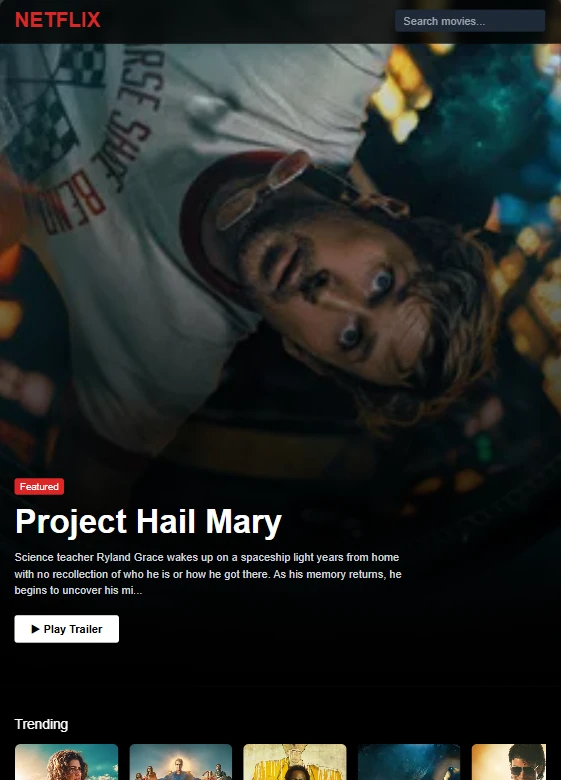
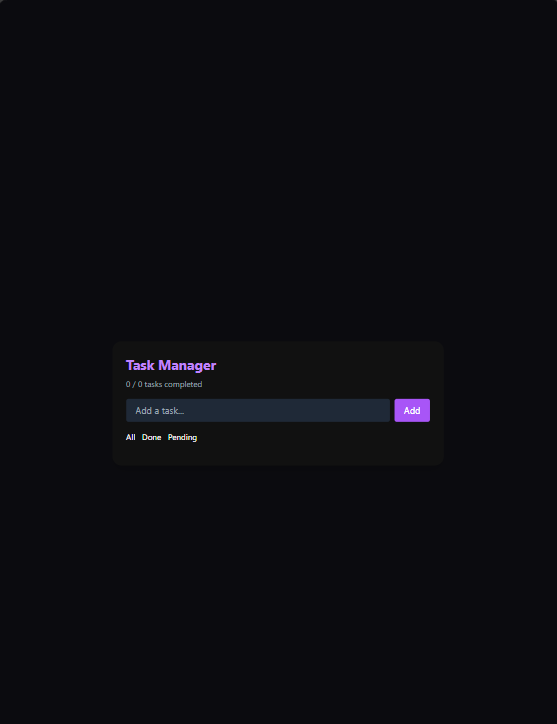

2
Portfolio projects presented clearly, without filler work.
Koy
Junior Frontend Developer
Open To Frontend Roles
I focus on creating interfaces that are visually clear, responsive across devices, and pleasant to use. My goal is to join a team where I can contribute to real product UI, keep learning fast, and grow into a strong frontend engineer.
2
Portfolio projects presented clearly, without filler work.
Tailwind
Main styling workflow for building fast, responsive interfaces.
UI First
Focused on layout, clarity, interaction and visual consistency.
About
I am a junior frontend developer with a strong interest in building interfaces that feel clean, modern and easy to use. I enjoy working on responsive layouts, improving visual structure, and turning simple ideas into polished pages that look more professional than their scope. Right now, I am focused on growing through real-world frontend work and becoming stronger with every project I ship.
Strength 01
I build with desktop and mobile in mind early, not as a final fix.
Strength 02
I care about spacing, readability and content flow so the interface feels easier to use.
Projects

Featured Project
A frontend-focused movie browsing experience inspired by the structure of a real streaming platform. This project shows my ability to organize a content-heavy interface, build reusable visual sections, and create a polished browsing experience around dynamic data and recognizable UI patterns.

Project
A task management app built to keep everyday interactions simple, readable and efficient. It highlights practical JavaScript usage, localStorage persistence, and a straightforward UI flow that helps users add, manage and keep track of tasks without unnecessary complexity.
Skills
Core
Workflow
What I Bring
Target Roles
Contact
I am available for junior frontend roles, internships, and UI-focused opportunities. If you want someone motivated, consistent and serious about improving, I would be glad to connect.